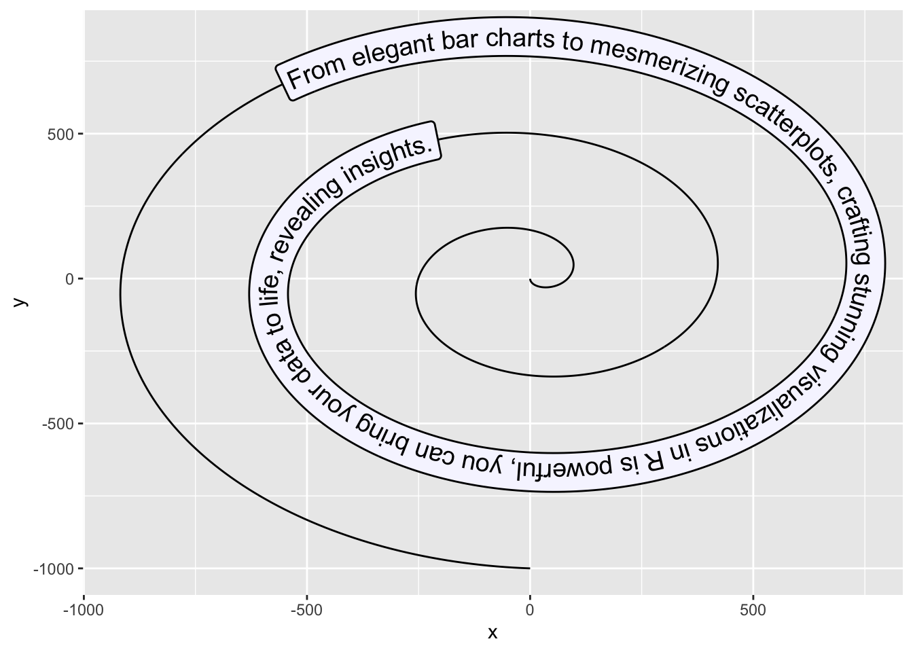
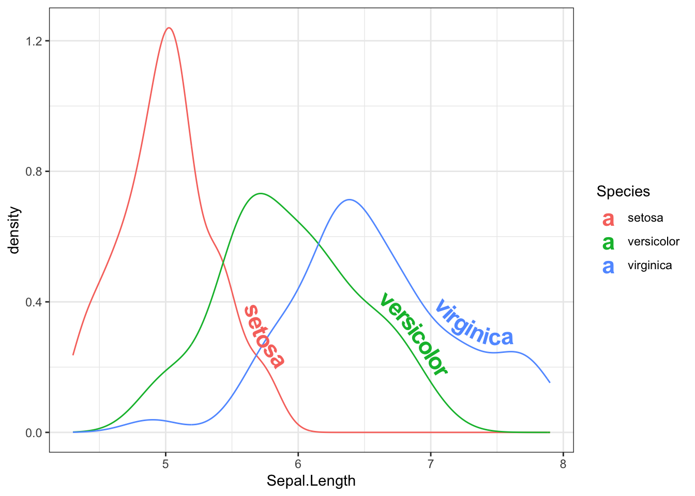
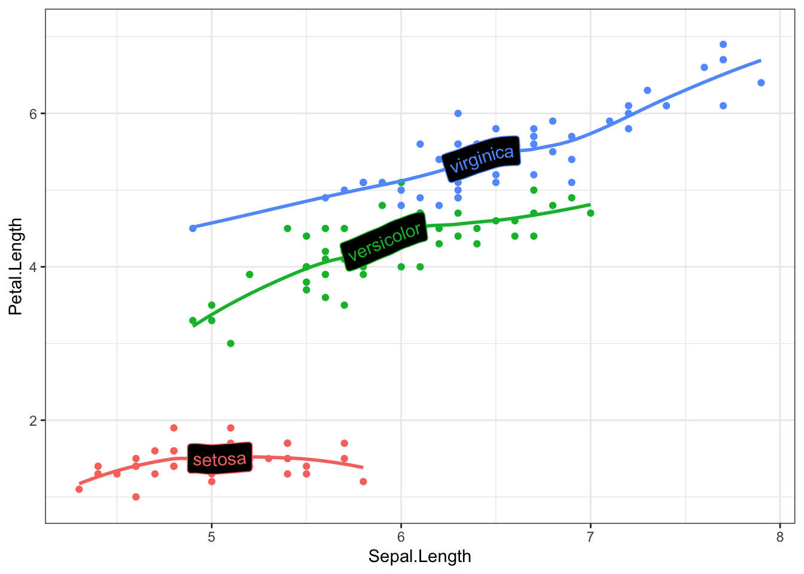
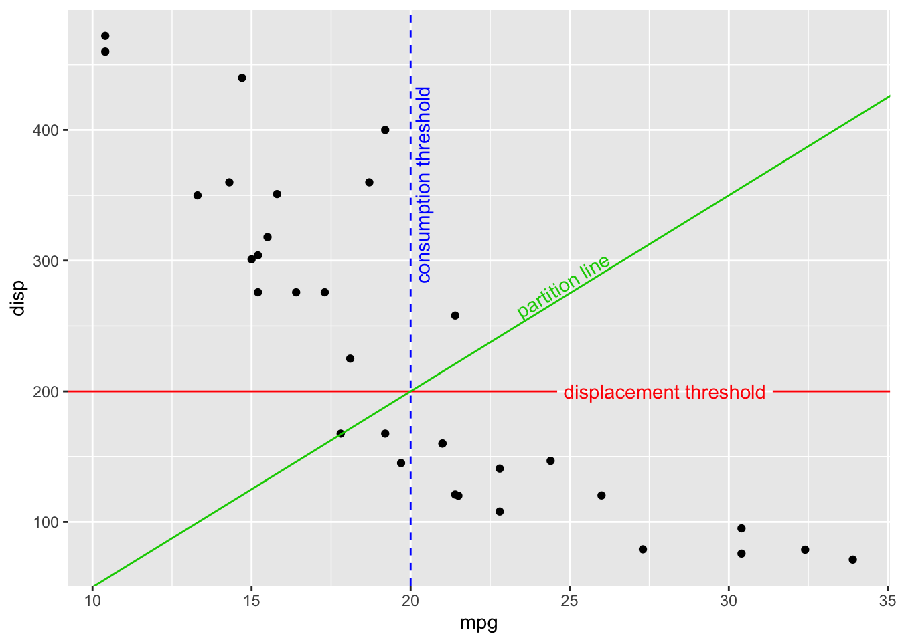
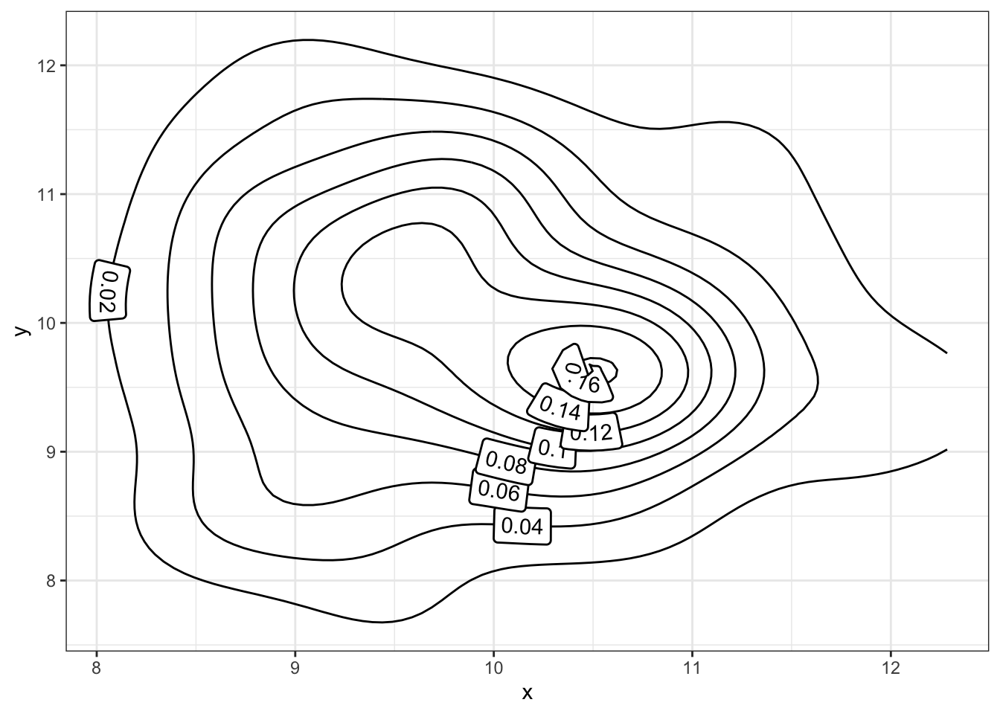

→ Text in a box
You can have the text in a box thanks to the
geom_labelpath() function.
Example:
ggplot(spiral, aes(x, y, label = text)) +
geom_labelpath(size = 5, fill = "#F6F6FF", hjust = 0.55)

→ Text on density chart
The geom_textdensity() can be used to plot group name
directly on the curve of a density chart. You can adjust the
position of the text with the vjust and
hjust arguments (numerical value or
“xmid”/“ymax”/“auto”).
Example with the iris dataset:
library(hrbrthemes)
data(iris)
ggplot(iris, aes(x = Sepal.Length, colour = Species, label = Species)) +
geom_textdensity(size = 6, fontface = 2, vjust = -0.4, hjust = "ymid") +
theme(legend.position = "none") + theme_bw()

→ Labelled trend lines
You can add trend lines with the group label on top with the
geom_labelsmooth() function
Example:
data(iris)
ggplot(iris, aes(x = Sepal.Length, y = Petal.Length, color = Species)) +
geom_point() +
geom_labelsmooth(aes(label = Species), fill = "black",
method = "loess", formula = y ~ x,
size = 4, linewidth = 1, boxlinewidth = 0.3) +
theme_bw() + guides(color = 'none') # remove legend

→ Reference lines
You can add reference lines with your own label thanks to the
geom_texthline(), geom_textvline() and
geom_textabline() functions.
Example:
data(mtcars)
ggplot(mtcars, aes(mpg, disp)) +
geom_point() +
geom_texthline(yintercept = 200, label = "displacement threshold",
hjust = 0.8, color = "red") +
geom_textvline(xintercept = 20, label = "consumption threshold", hjust = 0.8,
linetype = 2, vjust = 1.3, color = "blue") +
geom_textabline(slope = 15, intercept = -100, label = "partition line",
color = "green3", hjust = 0.6, vjust = -0.2)

→ 2D density contours
2D density contours become now very easy to create with the
geom_labeldensity2d() and
geom_textdensity2d()
Example:
df = data.frame(x = rnorm(n=100, mean=10),
y = rnorm(n=100, mean=10))
ggplot(df, aes(x, y)) +
geom_labeldensity2d() + theme_bw()
